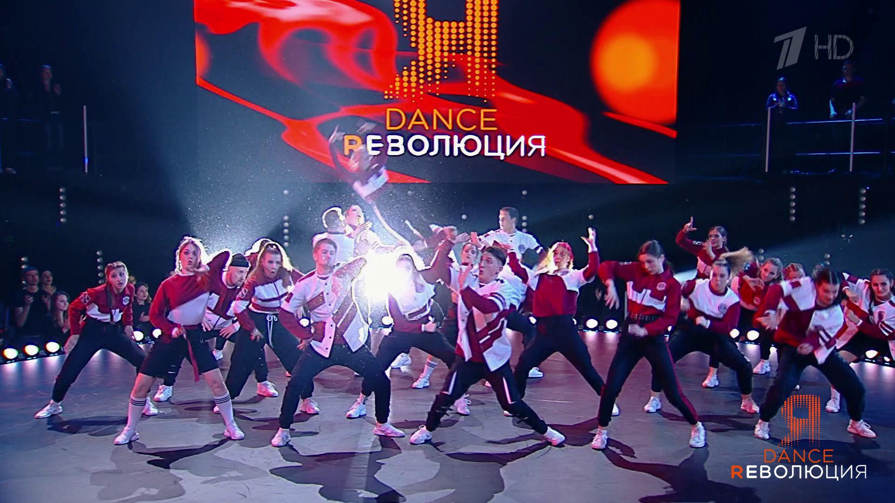

Dance
Dance is a performing art form consisting of sequences of movement, either improvised or purposefully selected. This movement has aesthetic and often symbolic value. Dance can be categorized and described by its choreography, by its repertoire of movements, or by its historical period or place of origin.

An important distinction is to be drawn between the contexts of theatrical and participatory dance, although these two categories are not always completely separate; both may have special functions, whether social, ceremonial, competitive, erotic, martial, or sacred/liturgical. Other forms of human movement are sometimes said to have a dance-like quality, including martial arts, gymnastics, cheerleading, figure skating, synchronized swimming, marching bands, and many other forms of athletics.
Rhythm
Rhythm and dance are deeply linked in history and practice. The American dancer Ted Shawn wrote; "The conception of rhythm which underlies all studies of the dance is something about which we could talk forever, and still not finish."[15] A musical rhythm requires two main elements; first, a regularly-repeating pulse (also called the "beat" or "tactus") that establishes the tempo and, second, a pattern of accents and rests that establishes the character of the metre or basic rhythmic pattern. The basic pulse is roughly equal in duration to a simple step or gesture.
Dances generally have a characteristic tempo and rhythmic pattern. The tango, for example, is usually danced in 2 4 time at approximately 66 beats per minute. The basic slow step, called a "slow", lasts for one beat, so that a full "right–left" step is equal to one 2 4 measure. The basic forward and backward walk of the dance is so counted – "slow-slow" – while many additional figures are counted "slow – quick-quick.
Occupations
Dancers
Professional dancers are usually employed on contract or for particular performances or productions. The professional life of a dancer is generally one of constantly changing work situations, strong competitive pressure and low pay. Consequently, professional dancers often must supplement their incomes to achieve financial stability. In the U.S. many professional dancers belong to unions (such as the American Guild of Musical Artists, Screen Actors Guild and Actors' Equity Association) that establish working conditions and minimum salaries for their members. Professional dancers must possess large amounts of athleticism. To lead a successful career, it is advantageous to be versatile in many styles of dance, have a strong technical background and to utilize other forms of physical training to remain fit and healthy.
Teachers
Dance teachers typically focus on teaching dance performance, or coaching competitive dancers, or both. They typically have performance experience in the types of dance they teach or coach. For example, dancesport teachers and coaches are often tournament dancers or former dancesport performers. Dance teachers may be self-employed, or employed by dance schools or general education institutions with dance programs. Some work for university programs or other schools that are associated with professional classical dance (e.g., ballet) or modern dance companies. Others are employed by smaller, privately owned dance schools that offer dance training and performance coaching for various types of dance.
Choreographers
Choreographers are the ones that design the dancing movements within a dance, they are often university trained and are typically employed for particular projects or, more rarely may work on contract as the resident choreographer for a specific dance company.